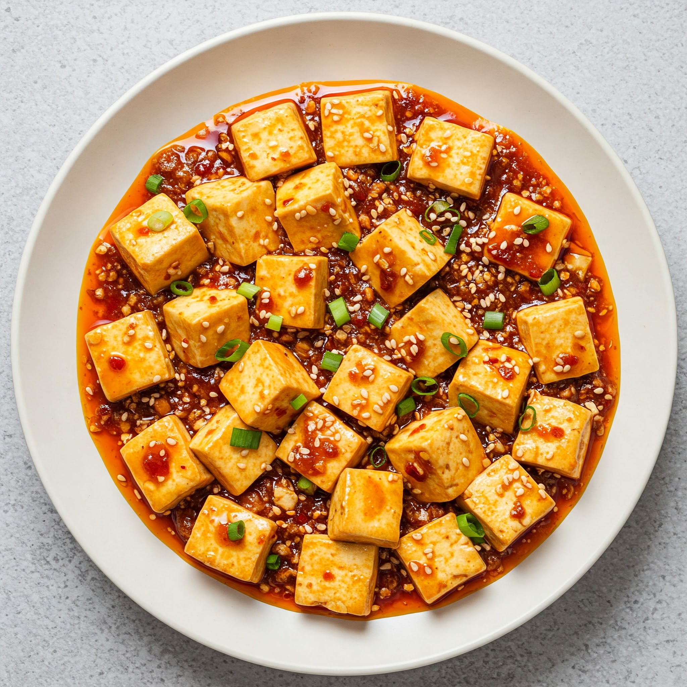

主页
西红柿炒鸡蛋

描述:
麻辣鲜香，嫩滑细腻，豆腐在舌尖舞动，香气在唇齿间留恋。
红油滚滚，豆腐如玉，麻辣鲜香烫，一口入魂，欲罢不能。
食材:
- 主料：
- 嫩豆腐：500克
- 猪肉末：100克 (也可以用牛肉末)
- 辅料：
- 郫县豆瓣酱：2汤匙
- 豆豉：1汤匙
- 花椒：1汤匙
- 干辣椒：2-3个 (根据辣度喜好调整)
- 姜：1小块
- 蒜：3瓣
- 葱：1段
- 调料：
- 料酒：1汤匙
- 酱油：1汤匙
- 白糖：1茶匙
- 淀粉：1汤匙
- 香油：1茶匙
- 食用油：适量
步骤：
- 准备工作：
-
豆腐切成1.5厘米左右的方块，放入淡盐水中浸泡10分钟，去除豆腥味并防止炒碎。
- 猪肉末用料酒和少量酱油腌制10分钟。
- 郫县豆瓣酱剁碎，豆豉剁碎，姜蒜切末，葱切葱花，干辣椒剪成小段。
- 花椒用少量食用油小火煸炒出香味，捞出花椒，油备用。
- 淀粉加少量水调成水淀粉备用。
- 炒制：
- 锅中倒入适量食用油，烧至六成热，放入腌制好的肉末煸炒至变色。
- 加入郫县豆瓣酱、豆豉、姜末、蒜末和干辣椒段，煸炒出红油和香味。
-
加入少量开水，没过豆腐，放入豆腐块，加入酱油、白糖，大火烧开转小火炖煮5分钟左右，让豆腐入味。
- 勾芡：
- 倒入水淀粉，轻轻翻动豆腐，使汤汁浓稠。
- 撒上葱花和花椒，淋上香油，即可出锅。